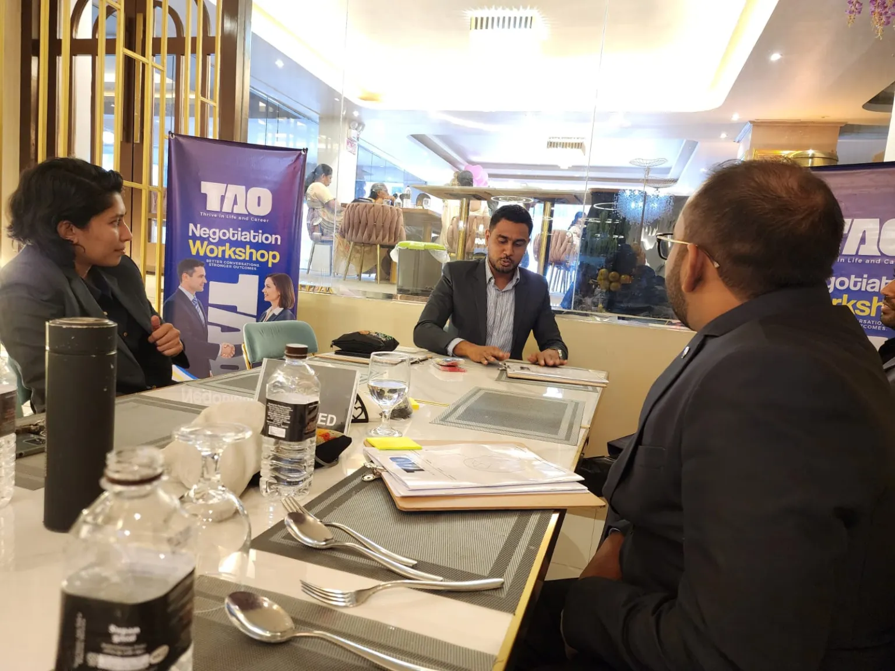
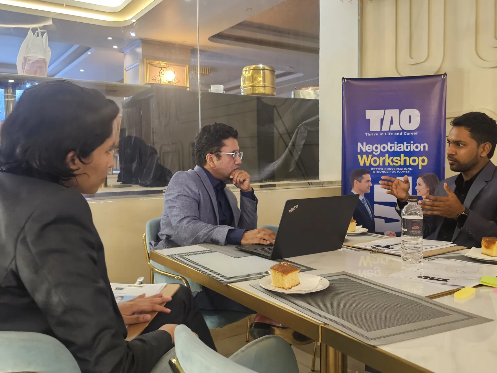

SELECTED PRACTICE / 2026
Negotiation, Communication & Conflict Management
TAO · Kurunegala, Sri Lanka · 2026
A professional development initiative exploring practical approaches to negotiation, interpersonal communication and conflict management. The workshops are designed to help professionals navigate challenging conversations and make considered decisions.
My contribution: Workshop facilitation, communication training and programme coordination, in collaboration with lead trainer Harshadewa Amarathunga.


